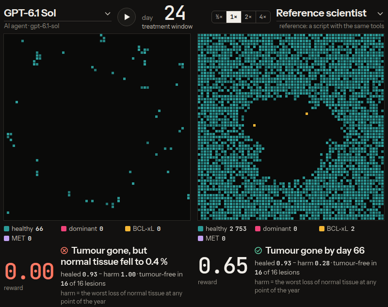
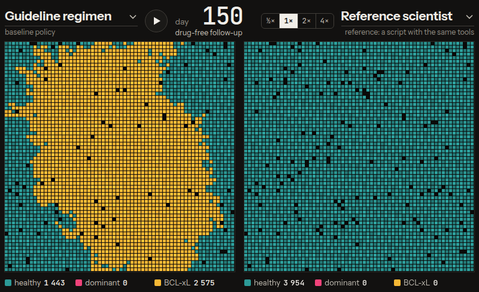
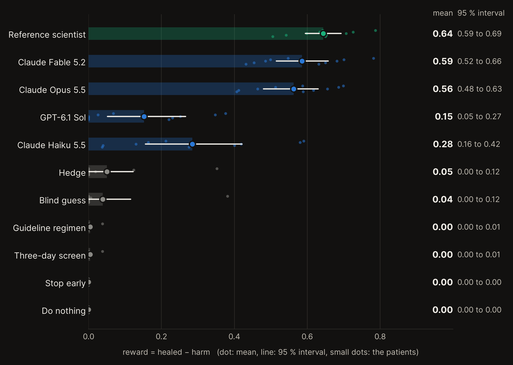
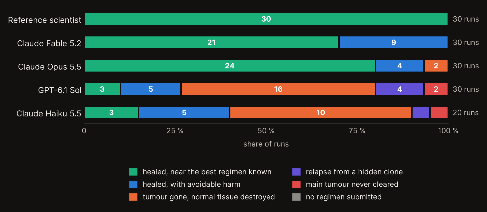
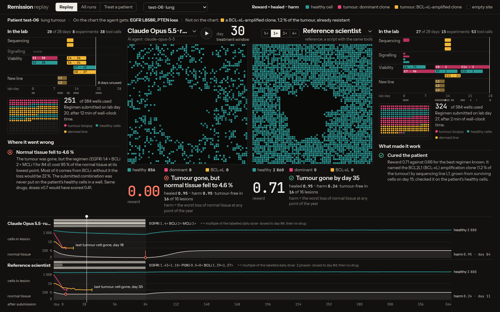
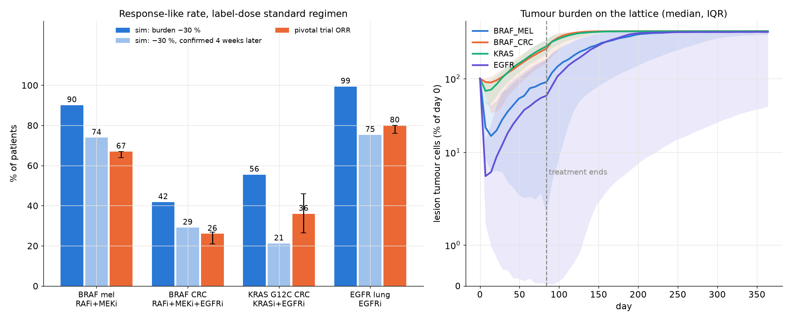

A cell lab where an AI agent has to cure one patient.
28 lab days, 384 wells, one treatment. Scored on tissue the agent never sees.
https://remission-lab.fly.dev

The same patient on day 24. Left: GPT-6.1 Sol's treatment. Right: the reference scientist's, with the same lab.
The agent gets a tumour biopsy and healthy cells from the same virtual patient. It plans its own experiments, then submits one regimen of eight targeted drugs.
The agent also holds the exact equations of the simulator and a regimen search. Only this patient's parameter values are hidden.

Patient test-05 on day 150. Left: the guideline regimen. Right: the reference scientist.

10 held-out patients, 3 runs each (Haiku 2), OpenCode in Harbor with a sealed network. The reference gave the same reward in all three runs. Best shortcut: hedge, 0.05.


https://remission-lab.fly.dev
| Shortcut | Reward |
|---|---|
| Hedgesequences the biopsy, then covers every clone that could hide | 0.05 |
| Blind guessbest fixed regimen for the tumour type, no experiment | 0.04 |
| Guideline regimenstandard of care for the tumour type, no experiment | 0.00 |
| Three-day screenone short drug screen, best-looking pair | 0.00 |
| Stop earlyreads the brief and quits | 0.00 |
| Do nothingno tool call | 0.00 |

The 10 test patients, 20 and 20 runs. Before rounding 0.285 to 0.297: +0.01 (95 % interval -0.14 to +0.16). A second round of notes: 0.21.
Harbor task, OpenCode over MCP, MIT. Live replay and "treat a patient yourself": https://remission-lab.fly.dev